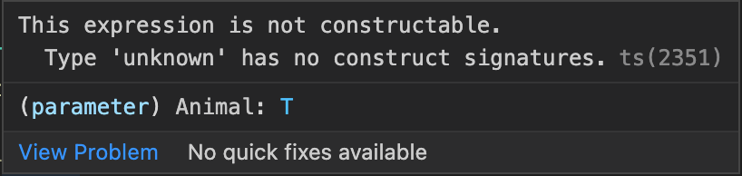

Generics
"Components that are capable of working on the data of today as well as the data of tomorrow will give you the most flexible capabilities for building up large software systems"
Let's implement a map
interface Map {
get(key: string): Object;
set(key: string, value: Object): void;
}
What's the problem here?
Generics! 🙌
interface Map<T> {
get(key: string): T;
set(key: string, value: T): void;
}
top level vs. function generics
interface Map {
get<T>(key: string): T;
set<T>(key: string, value: T): void;
}
Another example
class Engine<T>{
constructor(private runnable: T){}
run(){
this.runnable.run();
}
}Would it work?
What is the type of T?
Generic constrains 💪
interface Runnable {
run(): void;
}
class Engine<T extends Runnable>{
constructor(private runnable: T) { }
run() {
this.runnable.run();
}
}
function fetchProperty<T>(object: T, propertyName: string){
return object[propertyName];
}Would it work?
What is the type of T?
function fetchProperty<T, PropName extends keyof T>(object: T, propertyName: PropName){
return object[propertyName];
}And now? 💪
function animalFactory<T>(Animal: T,){
return new Animal();
}Ok, this deffinitely must work, right?
function animalFactory<T>(Animal: { new(): T }) {
return new Animal();
}Now it works with class types 💪
Lets combine everything
class Animal { }
interface Runnable {
run(): void;
}
class Cat extends Animal implements Runnable {
run() { }
}
class Dog extends Animal implements Runnable {
run() { }
}
function animalFactory<T extends Animal>(Animal: { new(): T }) {
return new Animal();
}
function startRunning<T extends Runnable>(runnable: T) {
runnable.run();
}Mixins
let's add a map
const map = new Map<string, string>();
map.set('1', 'something');
map.set('2', 'another thing');
now let's add a concatinate function to it.
take 1
class ConcatinateableMap extends Map{
concatinate(): string {
let total = '';
for (const value of this.values()) {
total += value + '\n';
}
return total;
}
}
pros
- simple
cons
- Need to create class for every type of class that has values
take 2
class ContainableMap {
private map = new Map<string, string>();
concatinate(): string {
let total = '';
for (const value of this.map.values()) {
total += value + '\n';
}
return total;
}
}pros
- simple
cons
- Need to create class for every type of class that has values
- Not really extends the class but hides the map inside
take 3
type Constructor = new (...args: any[]) => T;
type ValuesConstructor<ValuesType> = Constructor<{ values: () => IterableIterator<ValuesType> }>;
function getConcatinatableMap<T extends ValuesConstructor<string>>(Base: T) {
return class extends Base {
concatinate(): string {
let total = '';
for (const value of this.values()) {
total += value + '\n';
}
return total;
}
}
}
const ConcatinatableMap = getConcatinatableMap(Map);
const map = new ConcatinatableMap();
map.concatinate() 🤯 DIY(mixins)
- create animal class (choose your favorite animal
- create 2 behaviour mixings, one for animals that can fly
- the other for animals that can swim
- give your animal both behaviors
Decorators
Generally follows decoration pattern
Decoration Pattern

Decoration Kurzgesagt
(In a Nutshell)
- Give execution of a component to another entity
- Another entity executes additional code together with original one
Activating Decorators
"experimentalDecorators": true,
"emitDecoratorMetadata": true,
Decorators in Typescript (Angular)
@Injectable()
class UsefulService {
}
@Injectable()
class NeedsService {
constructor(public service: UsefulService) {}
}
Decorators in Typescript (Inversify)
@injectable()
class Ninja implements Warrior {
@inject(TYPES.Weapon) private _katana: Weapon;
@inject(TYPES.ThrowableWeapon) private _shuriken: ThrowableWeapon;
public fight() { return this._katana.hit(); }
public sneak() { return this._shuriken.throw(); }
}
Decorators Types
(In Typescript)
- Class
- Property
- Accessor
- Method
- Patameter
Decorator vs. Decorator Factory
- Decorator - creates direct decorator
- Factory - allows customization of decorators
Decorator Factory Example
function color(value: string) {
// this is the decorator factory, it sets up
// the returned decorator function
return function (target) {
// this is the decorator
// do something with 'target' and 'value'...
};
}
Class Decorators (implementation)
function ConstructorPerformance(Constructor: { new(...args: any[]): any }) {
return class extends Constructor {
constructor(...args: any[]) {
const start = new Date();
super(args);
const end = new Date();
console.log(`took ${end.getTime() - start.getTime()}ms to finish construction`);
}
}
}
Class Decorators (Usage)
@ConstructorPerformance
class Test {
constructor(){
let result = 1
for (let index = 1; index < 10000; index++) {
result *= index;
}
}
}
const test = new Test();
took 12ms to finish construction
Method Decorator (implementation)
function ExceptionWrapper(target: any, propertyKey: string, descriptor: TypedPropertyDescriptor<(...args: any[]) => void>) {
const originalFunction = target[propertyKey];
descriptor.value = (...args: any[]) => {
try{
originalFunction.apply(target, ...args);
} catch(error){
const typedError = error as Error
console.log(`caught exception in wrapper, ${typedError.message}`);
}
}
}
Method Decorator (usage)
export class Test {
@ExceptionWrapper
throwException(someValue: string) {
throw new Error(someValue);
}
}
const t = new Test();
console.log(t.throwException('some string'));
Reflection and Metadata
Let's look at the code
__decorate([
ExceptionWrapper,
__metadata("design:type", Function),
__metadata("design:paramtypes", [String]),
__metadata("design:returntype", void 0)
], Test.prototype, "throwException", null);
exports.Test = Test;
const t = new Test();
console.log(t.throwException('some string'));
reflect-metadta to the rescue
- https://www.npmjs.com/package/reflect-metadata
- ~4M weekly downloads
- Detailed Proposal
Reflection with reflect-metadata
import 'reflect-metadata';
function ConstructorPerformance(Constructor: { new(...args: any[]): any }) {
const start = new Date();
const metadataKeys = Reflect.getOwnMetadataKeys(Constructor); // ['design:paramtypes']
const metadataPatamtypes = Reflect.getMetadata('design:paramtypes', Constructor);
console.log(metadataPatamtypes.map((param:any) => param.name)); // [ 'String', 'Boolean' ]
return class extends Constructor {
constructor(...args: any[]) {
const start = new Date();
super(args);
const end = new Date();
console.log(`took ${end.getTime() - start.getTime()}ms to finish construction`);
}
}
}
Wait... What about javascript?
Javascript decorators are at stage2
Which means: The committee expects the feature to be developed and eventually included in the standard
DIY (decorators)
- Create an autologger decorator (method decorator)
- Should log once in a beginning of a function
- Should log all params with their values
done!
Typescript Basics++
number 1,2,3
string 'Hi
boolean true false
objects {age:30}
Array [1,2,3]
Tupels
A tuple type is another sort of Array type that knows exactly how many elements it contains, and exactly which types it contains at specific positions.
const role:[string, number]
Summary
Tuples are not inferred by typescript they have to be declared.
Event when a tuple is declared (with fixed length) it is still possible to push data to it.
a tuple can have an optional value at the end
a tuple can have a rest param at any place
the last can be used in order to pass deferent types to one function as one parameter
Enums
Enums are one of the few features TypeScript has which is not a type-level extension of JavaScript.
Enums allow a developer to define a set of named constants. Using enums can make it easier to document intent, or create a set of distinct cases. TypeScript provides both numeric and string-based enums.
Summary
Numeric enums have auto-incrementing behavior
string enums don’t have auto-incrementing behavior
String enums allow you to give a meaningful and readable value when your code runs
Union Types
A union type is a type formed from two or more other types, representing values that may be any one of those types.
We refer to each of these types as the union’s members.
Summary
A union type is a type formed from two or more other types, representing values that may be any one of those types.
TypeScript can deduce a more specific type for a value based on the structure of the code.
this pattern is called "Narrowing".
If there is a realationship between input and output, use function overloading.
Literal Types
In addition to the general types string and number, we can refer to specific strings and numbers in type positions.
By themselves, literal types aren’t very valuable
But by combining literals into unions, you can express a much more useful concept - for example, functions that only accept a certain set of known values
Summary
Literal Types are inffered by TS when using const
TThey are valuable when using in Union Types
Union Types vs Enums
narowing example - redux
Summary
If you are looking to optimize your code and reduce the bundle size at the moment of compiling into JavaScript - union types
If you will be needed to run iterations over a set of values, enums are the way to go
If you have only 2 options, I think unions are better
If you have more than 2-3 options, Enums are better
If you don't have a very good reason not to, use string Enums
Type Guards and Narrowing
what is narrowing?
TypeScript follows possible paths of execution that our programs can take to analyze the most specific possible type of a value at a given position. It looks at these special checks (called type guards) and assignments, and the process of refining types to more specific types than declared is called narrowing
1. The instanceof keyword
2. The typeof keyword
3. The in keyword
4. Equality narrowing type guard
5. Custom type guard with predicate
what is the problem with this?
catch (e) {
console.log((e as Error).message)
}
Solutions
catch (err) {
if (err instanceof Error) {
console.log(err.message);
} else {
console.log('Unexpected error', err);
}
catch (err) {
if ("message" in err) {
console.log(err.message);
} else {
console.log('Unexpected error', err);
}
Things you should have known in TypeScript but you probably don't
string, number or boolean literal as a type
1. strings
2. numbers
3. booleans
for instance if a create a variable
const number = 23
For example:
type Asaf = 'Asaf';
// no error
const name: Asaf = 'Asaf'
const age: 32 = 32
// error
// Type '"Niv"' is not assignable to type '"Asaf"'
const name: Asaf = 'Niv'
// Type '40' is not assignable to type '32'
const age: 32 = 40
For example - consider the next function:
const combine = (
input1: number ,
input2: number,
resultConversion: string
) => {
if(resultConversion === "as-number"){
return input1 + input2;
}
else{
const res = input1 + input2;
return res.toString();
}
}
const combine = (
input1: number ,
input2: number,
resultConversion: 'as-string' | 'as-number'
) => {
if(resultConversion === as-number){
return input1 + input2;
}
else{
const res = input1 + input2;
return res.toString();
}
}
For example:
type ResultConversion = 'as-string' | 'as-number'
const combine = (
input1: number ,
input2: number,
resultConversion: ResultConversion
) => {
if(resultConversion === "as-number"){
return input1 + input2;
}
else{
const res = input1 + input2;
return res.toString();
}
}
any other string will not be alowed.
most of the time it will be used in a Union type
combine(1, 2, 'as-string') // 3
combine(1, 2, 'as-strnig')
// Argument of type '"as-strnig"' is not assignable to parameter oftype 'ResultConversion'.(2345)
Quiz
What can not be a literal type?
1. String
2. Number
3. Array
4. Boolean
What will be the type of this expression?
const name = 'name'
Rest params in function parameters and Tuples
1. A function has only one rest parameter.
2. The rest parameter appears last in the parameter list.
3. The type of the rest parameter is an array type.
function fn(...rest: type[]) {
//...
}
function getTotal(...numbers: number[]): number {
let total = 0;
numbers.forEach((num) => total += num);
return total;
}
console.log(getTotal()); // 0
console.log(getTotal(10, 20)); // 30
console.log(getTotal(10, 20, 30)); // 60
// Declare a tuple type
let x: [string, number];
// Initialize it
x = ["hello", 10]; // OK
// Initialize it incorrectly
x = [10, "hello"]; // Error
// A tuple with a *rest element* - holds at least 2 strings at the front,
// and any number of booleans at the back.
let e: [string, string, ...boolean[]];
e = ["hello", "world"];
e = ["hello", "world", false];
e = ["hello", "world", true, false, true];
let foo: [...string[], number];
foo = [123];
foo = ["hello", 123];
foo = ["hello!", "hello!", "hello!", 123];
let bar: [boolean, ...string[], boolean];
bar = [true, false];
bar = [true, "some text", false];
bar = [true, "some", "separated", "text", false];
interface Clown {
/*...*/
}
interface Joker {
/*...*/
}
let StealersWheel: [...Clown[], "me", ...Joker[]];
// A rest element cannot follow another rest element.
let StringsAndMaybeBoolean: [...string[], boolean?];
// An optional element cannot follow a rest element.
const doStuff = (
...args: [...names: string[],
shouldCapitalize: boolean]
) void => {
// do stuff...
}
doStuff(false)
doStuff("fee", "fi", "fo", "fum",true);
Quiz
which of these is not correct?
let bar:[...number[], boolean] function foo(bool: boolean, num: number, ...rest: string[]) let x:[...number, string?]
const func =
(...args:[...phoneNumbers :number[], shouldBeCalled:boolean])
:void => {}Union types
interface Bird {
fly(): void;
layEggs(): void;
}
interface Fish {
swim(): void;
layEggs(): void;
}
declare function getSmallPet(): Fish | Bird;
let pet = getSmallPet();
pet.layEggs();
// Only available in one of the two possible types
pet.swim();
/* Property 'swim' does not exist on type 'Bird | Fish'.
roperty 'swim' does not exist on type 'Bird'.*/
Discriminating Unions
type NetworkState =
| NetworkLoadingState
| NetworkFailedState
| NetworkSuccessState;
function logger(state: NetworkState): string {
// Trying to access a property which isn't shared
// across all types will raise an error
state.code;
switch (state.state) {
case "loading":
return "Downloading...";
case "failed":
return `Error ${state.code} downloading`;
case "success":
return `Downloaded ${state.response.title} - ${state.response.summary}`;
}
}
Quiz
consider the next types
Type vs Interface
Interface
1. Interfaces can be extended and implemented
interface Person {
name: string,
age: number
sayHello:() => void
}
class SomePerson implements Person {
name ='Asaf'
age = 32
sayHello () {console.log('Hello')}
}
const p = new SomePerson();
interface Developer extends Person{
typescriptMaster: boolean
}
const me: Developer = {
name: 'Asaf',
age: 32,
typescriptMaster: true,
sayHello: () => console.log('Hello')
}
2. Declaration merging
interface Box {
height: number;
width: number;
}
interface Box {
scale: number;
}
let box: Box = { height: 5, width: 6, scale: 10 };
Type alias
1. types can not be extended - types intersection
type Person = {
name: string,
age: number
} & { typescriptMaster: boolean }
const me: Person = {
name: 'Asaf',
age: 32,
typescriptMaster: true
}
2. Union types
type Person = {
name: string,
age: number
}
type TypescriptMaster = { typescriptMaster: boolean }
type Asaf = Person | TypescriptMaster
const me: Asaf = {
name: 'Asaf',
age: 32,
}
// or
const me: Asaf = {
typescriptMaster: true;
}
// or
const me: Asaf = {
name: 'Asaf',
age: 32,
typescriptMaster: true;
}
type never
// Function returning never must not have a reachable end point
function error(message: string): never {
throw new Error(message);
}
// Inferred return type is never
function fail() {
return error("Something failed");
}
// Function returning never must not have a reachable end point
function infiniteLoop(): never {
while (true) {}
}
type unknown
let value: unknown;
value = true; // OK
value = 42; // OK
value = "Hello World"; // OK
value = []; // OK
value = {}; // OK
value = Math.random; // OK
value = null; // OK
value = undefined; // OK
value = new TypeError(); // OK
value = Symbol("type"); // OK
let value: unknown;
let value1: unknown = value; // OK
let value2: any = value; // OK
let value3: boolean = value; // Error
let value4: number = value; // Error
let value5: string = value; // Error
let value6: object = value; // Error
let value7: any[] = value; // Error
let value8: Function = value; // Error
function stringifyForLogging(value: unknown): string {
if (typeof value === "string") {
return value
}
if (typeof value === "function") {
// Within this branch, `value` has type `Function`,
// so we can access the function's `name` property
const functionName = value.name || "(anonymous)";
return `[function ${functionName}]`;
}
if (value instanceof Date) {
// Within this branch, `value` has type `Date`,
// so we can call the `toISOString` method
return value.toISOString();
}
return String(value);
}
If you want to force the compiler to trust you that a value of type unknown is of a given type, you can use a type assertion like this:
const value: unknown = "Hello World";
const someString: string = value as string;
const otherString = someString.toUpperCase(); // "HELLO WORLD"
This can easily lead to an error being thrown at runtime if you make a mistake and specify an incorrect type:
const value: unknown = 42;
const someString: string = value as string;
const otherString = someString.toUpperCase(); // BOOM
In a union type, unknown absorbs every type. This means that if any of the constituent types is unknown, the union type evaluates to unknown:
type UnionType1 = unknown | null; // unknown
type UnionType2 = unknown | undefined; // unknown
type UnionType3 = unknown | string; // unknown
type UnionType4 = unknown | number[]; // unknown
type UnionType5 = unknown | any; // any